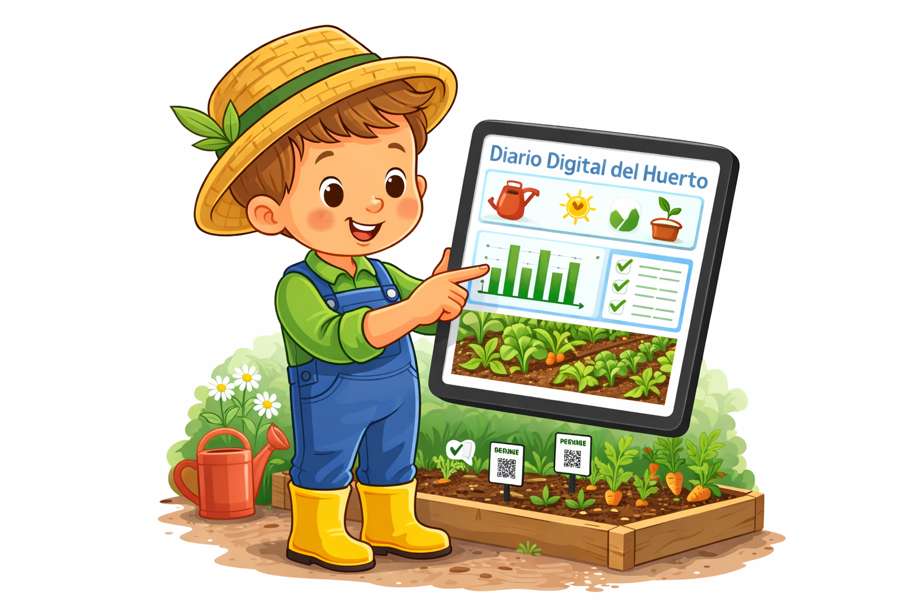

NUESTRO DIARIO DE HUERTO DIGITAL
Hola chicos. Vamos a realizar una actividad INTERESANTE que consistirá en hacer un diario digital de nuestro trabajo en el huerto utilizando herramientas como las tablets y los móviles.

Gracias a esta tecnología podremos observar, registrar y expresar lo que hacemos de forma fácil y divertida.
Nuestro reto consistirá en hacer un seguimiento de nuestro trabajo y ver su evolución con nuestros recursos digitales.